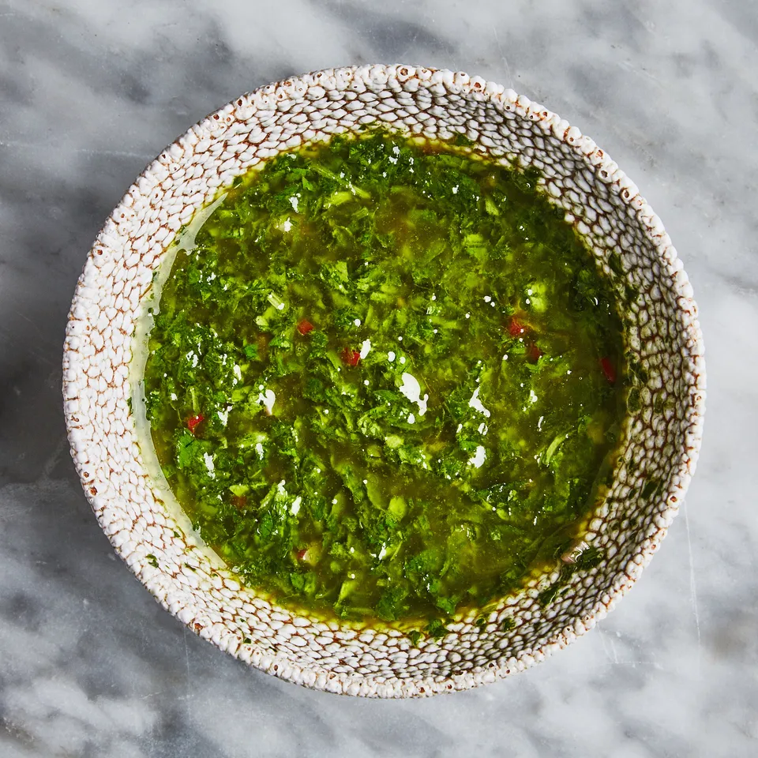

Chimichurri Sauce

Description:
Fresh oregano, parsley, and cilantro come together with a heavy pour of red wine vinegar for a punchy condiment that’s as good spooned over a grilled steak as it is drizzled on a bowl of lentils (it’s also an excellent marinade).
Ingredients
Makes about 2 cups
- 1 shallot, finely chopped
- 1 Fresno chile or red jalapeño, finely chopped
- 3-4 garlic cloves, thinly sliced or finely chopped
- 1/2 cup red wine vinegar
- 1 tsp. kosher salt, plus more
- 1/2 cup finely chopped cilantro
- 1/4 cup cup finely chopped flat-leaf parsley
- 2 Tbsp. finely chopped oregano
- 3/4 cup extra-virgin olive oil
Steps
- Combine shallot, chile, garlic, vinegar, and 1 tsp. salt in a medium bowl. Let sit 10 minutes. Stir in cilantro, parsley, and oregano. Using a fork, whisk in oil. Transfer ½ cup chimichurri to a small bowl; season with salt and reserve as sauce.